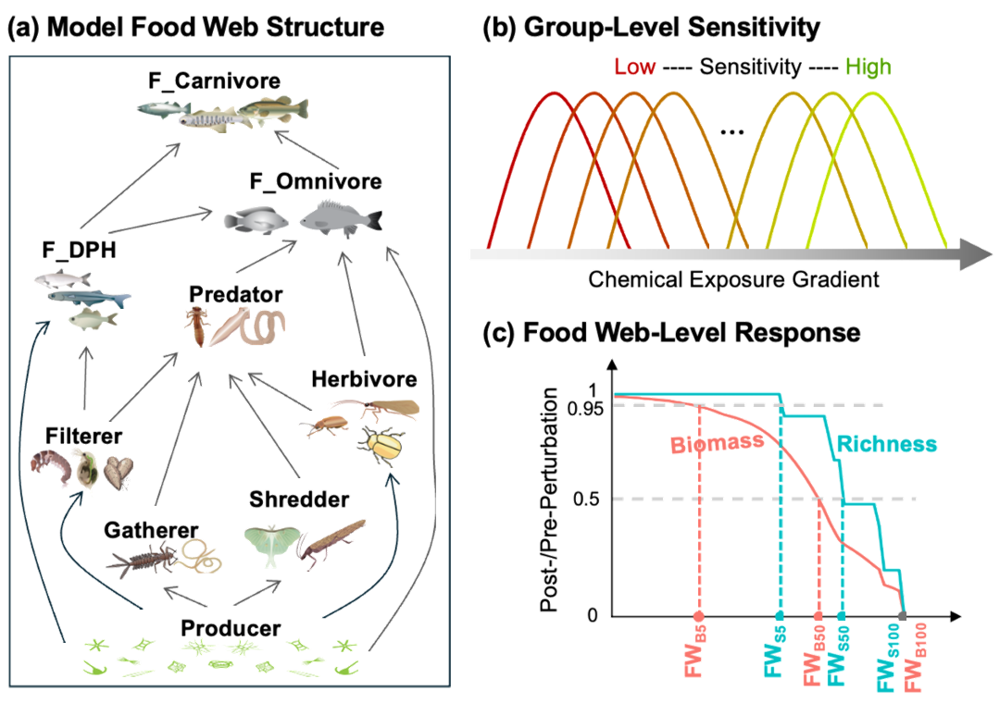
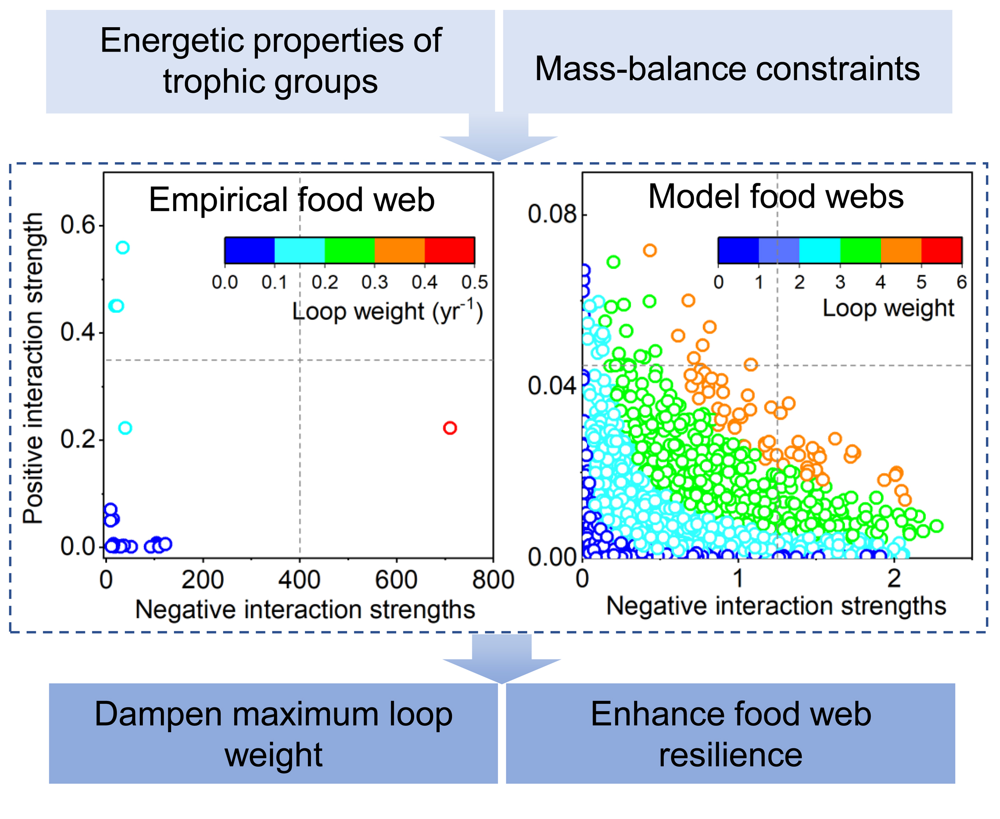
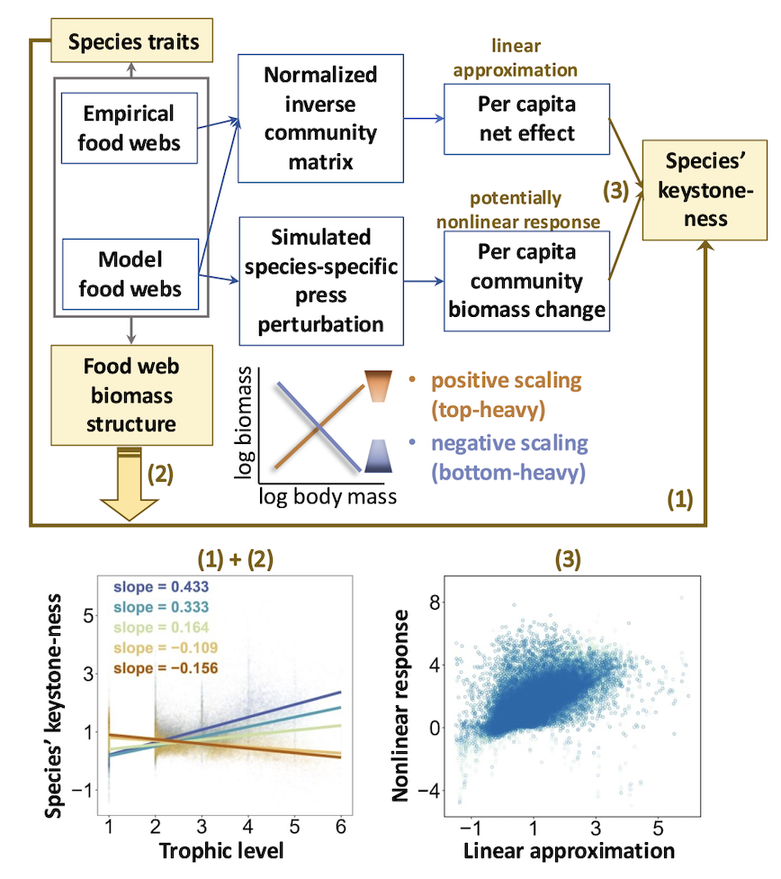
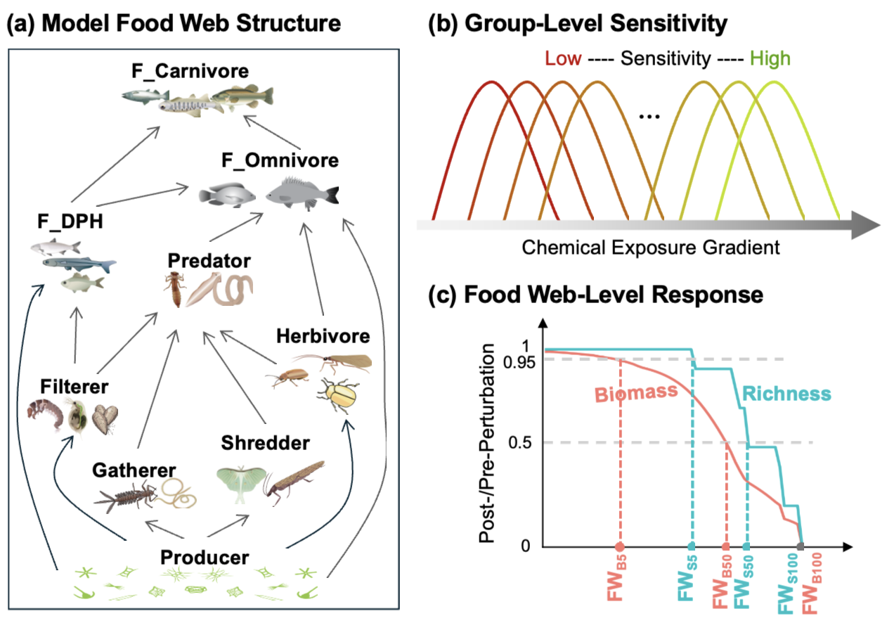
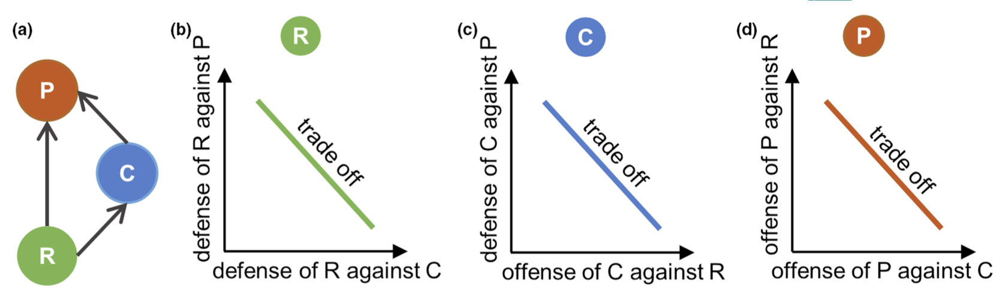

Chemical pollution in aquatic ecosystems is an increasing global concern, yet community-level responses to chemical stress remain poorly understood. In this study, we used empirical datasets of species sensitivity (lethal concentration endpoints for algae, invertebrates and fish) to derive toxicant-induced mortality, which were then incorporated into dynamic food web modelling. We conducted sequential press perturbations by gradually increasing chemical exposures and evaluated two types of food-web endpoints: species persistence and community biomass. Threshold losses were assessed at 5% and 50% reductions, and at 100%, corresponding to complete collapse. We found that food web structure (connectance and maximum trophic level) exerted stronger effects on both persistence and biomass at 5% and 50% endpoints, whereas species response diversity (dissimilarity in species sensitivities) was more influential at the 100% endpoint.

Food web stability is at the heart of understanding the structure and functioning of ecosystems. Previous studies show that models of empirical food webs are substantially more stable than random ones, due to a few strong interactions embedded in a majority of weak interactions. Analyses of trophic interaction loops show that in empirical food webs the patterns of the interac- tion strengths prevent the occurrence of destabilizing heavy loops and thereby enhances resilience. Yet, it is still unexplored which biological mechanisms cause these patterns that enhance food web resilience. We quantified food web resilience using the real part of the maximum eigenvalue of the Jacobian matrix of the food web from a seagrass bed in the Yellow River Delta (YRD) wetland, that could be parametrized by the empirical data of the food web. We found that the empirically based Jacobian matrix of the YRD food web in- dicated a much higher resilience than random matrices with the same element values but arranged in random ways. Investigating the trophic interaction loops revealed that the high resilience was due to a negative correlation between the negative and positive interaction strengths (per capita top-down and bottom-up effects, respectively) within positive feedback loops with three species. The nega- tive correlation showed that when the negative interaction strengths were strong the positive was weak, and vice versa. Our invented reformulation of loop weight in terms of biomasses and specific production rates showed that energetic properties of the trophic groups in the loop and mass-balance constraints, for example, the food uptake has to balance all losses, created the negative correlation between the interaction strengths. This result could be generalized using a dynamic intraguild predation model, which de- livered the same pattern for a wide range of model parameters.

Identifying species with disproportionate effects on other species under press perturbations is essential, yet how species traits and community context drive their ‘keystone-ness’ remain unclear. We quantified keystone-ness as linearly approximated per capita net effect derived from normalised inverse community matrices and as non-linear per capita community biomass change from simulated perturbations in food webs with varying biomass structure. In bottom-heavy webs (negative relationship be- tween species’ body mass and their biomass within the web), larger species at higher trophic levels tended to be keystone species, whereas in top-heavy webs (positive body mass to biomass relationship), the opposite was true and the relationships between species’ energetic traits and keystone-ness were weakened or reversed compared to bottom-heavy webs. Linear approximations aligned well with non-linear responses in bottom-heavy webs, but were less consistent in top-heavy webs. These findings high- light the importance of community context in shaping species’ keystone-ness and informing effective conservation actions.

Mixotrophs combining autotrophy and heterotrophy are ubiquitous in aquatic environments and significantly influence ecosystem functioning. Mixotrophs may adapt their nutritional mode in response to selection, becoming more heterotrophic or more autotrophic over time. This may dynamically interact with adaptations in the defense level of their prey organisms (resources) as population dynamics are shaped by both competitive and predatory interactions. Here, we developed a trait-based mixotroph-resource model comprising a mixotrophic consumer (e.g. dinoflagellate) and a resource (e.g. autotrophic algae or bacteria) competing for inorganic nutrients. The model involves tradeoffs between autotrophic and heterotrophic growth for the mixotroph, and between defense capacity against predation and maximum growth rate for the resource. We investigated the population and trait dynamics for different scenarios, in which none, one or both species were able to adapt their traits in response to selection. Under specific combinations of fixed traits, either species could dominate whereas the mixotroph often gained dominance when it could adapt its trait to exert both strong predation and competition pressure on the resource. Trait adaptation in the resource promoted its dominance only when the mixotrophy trait was fixed, whereas it played a minor role under coadaptation. Moreover, antiphase cycles often emerged when the resource and the mixotroph adapted their traits independently or interactively, with the species dominating that was able to adapt to the current selection pressure. Overall, our findings demonstrate that mixotrophy trait adaptation substantially affects species composition and the shape and stability of population dynamics in food webs. 
Disentangling how species coexist in an intraguild predation (IGP) module is a great step toward understanding biodiversity conservation in complex natural food webs. Trait variation enabling individual species to adjust to ambient conditions may facilitate coexistence. However, it is still unclear how coadaptation of all species within the IGP module, constrained by complex trophic interactions and trade-offs among species-specific traits, interactively affects species coexistence and population dynamics. We developed an adaptive IGP model allowing prey and predator species to mutually adjust their species-specific defensive and offensive strategies to each other. We investigated species persistence, the temporal variation of population dynamics, and the occurrence of bistability in IGP models without and with trait adaptation along a gradient of enrichment represented by carrying capacity of the basal prey for different widths and speeds of trait adaptation within each species. Results showed that trait adaptation within multiple species greatly enhanced the coexistence of all three species in the module. A larger width of trait adaptation facilitated species coexistence independent of the speed of trait adaptation at lower enrichment levels, while a sufficiently large and fast trait adaptation promoted species coexistence at higher enrichment levels. Within the oscillating regime, increasing the speed of trait adaptation reduced the temporal variability of biomasses of all species. Finally, species coadaptation strongly reduced the presence of bistability and promoted the attractor with all three species coexisting. These findings resolve the contradiction between the widespread occurrence of IGP in nature and the theoretical predictions that IGP should only occur under restricted conditions and lead to unstable population dynamics, which broadens the mechanisms presumably underlying the maintenance of IGP modules in nature. 